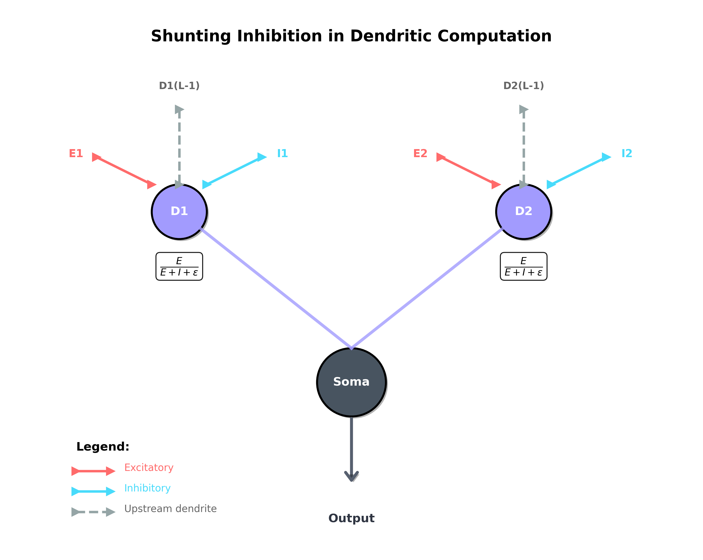

Shunting Inhibition: The Core Computational Mechanism#
Shunting inhibition represents the fundamental computational principle underlying the Dendritic Modeling Framework. Unlike traditional neural networks that rely on simple weighted summation, our framework implements divisive normalization through the biologically-inspired shunting inhibition mechanism.


Shunting Inhibition in Dendritic Processing: Multiple dendrites receive excitatory and inhibitory inputs, perform local shunting inhibition computation, and integrate at the soma. Each dendrite normalizes its inputs through the E/(E+I+ε) operation.#
Mathematical Foundation#
The core mathematical operation in shunting inhibition is sequential dendritic processing:
where:
\(E_i\) represents excitatory inputs to dendrite i
\(I_i\) represents inhibitory inputs to dendrite i
\(D_{i+1}\) represents the output from the previous dendrite (dendrite i+1)
\(\epsilon\) is a small positive constant preventing division by zero
\(V_{d_i} \in [0, 1]\) is the normalized output of dendrite i
This creates a sequential processing chain: dendrite_n → dendrite_{n-1} → … → dendrite_1 → soma.
Properties of Shunting Inhibition#
Bounded Output: The shunting inhibition operation naturally bounds outputs between 0 and 1, providing automatic gain control without requiring explicit normalization layers.
Divisive Normalization: Unlike subtractive inhibition (E - I), shunting inhibition provides divisive normalization, which is more stable and biologically realistic.
Gain Control: The mechanism provides adaptive gain control where strong inhibition reduces the effective gain of excitatory inputs, preventing saturation.
Contrast Enhancement: In sensory processing, shunting inhibition enhances contrast by suppressing uniform background activity while preserving signal differences.
Biological Basis#
Shunting inhibition is ubiquitous in biological nervous systems and serves multiple computational functions:
Synaptic Mechanisms#
GABA-A Receptors: Fast inhibitory synapses mediated by GABA-A receptors provide chloride conductance that shunts excitatory currents.
Dendritic Location: Inhibitory synapses located on dendritic branches can selectively gate excitatory inputs through local shunting.
Temporal Dynamics: The temporal overlap of excitatory and inhibitory inputs determines the strength of shunting inhibition.
Neural Circuit Functions#
Lateral Inhibition: In sensory systems, lateral inhibition through shunting mechanisms enhances edge detection and contrast.
Gain Control: Visual cortex neurons use shunting inhibition to adapt their gain based on stimulus contrast and attention.
Oscillation Control: Shunting inhibition helps regulate neural oscillations by controlling the excitability of neural populations.
Homeostatic Regulation: The mechanism provides homeostatic regulation of neural activity, preventing runaway excitation.
Implementation in the Framework#
The Dendritic Modeling Framework implements shunting inhibition at multiple levels:
Dendritic Level#
Each dendritic layer performs sequential shunting inhibition computation:
class DendriticBranchLayer(nn.Module):
def __init__(self, output_dim, excitatory_input_dim, inhibitory_input_dim, epsilon=1e-6):
super().__init__()
self.excitatory_weights = nn.Parameter(torch.randn(excitatory_input_dim, output_dim))
self.inhibitory_weights = nn.Parameter(torch.randn(inhibitory_input_dim, output_dim))
self.epsilon = epsilon
def forward(self, x, inhibitory_input=None, branch_input=None):
# Compute excitatory activation
E = torch.matmul(x, self.excitatory_weights)
# Compute inhibitory activation
I = torch.matmul(inhibitory_input, self.inhibitory_weights) if inhibitory_input is not None else 0
# Include previous dendrite output
D_prev = branch_input if branch_input is not None else 0
# Apply shunting inhibition: E/(E+I+D_prev+ε)
numerator = E + D_prev
denominator = E + D_prev + I + self.epsilon
output = numerator / denominator
return output
Network Level#
The framework implements shunting inhibition across network layers:
from dendritic_modeling.networks import ExcitationInhibitionNetwork
from dendritic_modeling.config import TransferFunctionParams
# Configure shunting inhibition parameters
transfer_params = TransferFunctionParams(
input_mode=0, # Direct input mode
multiplicative=True, # Enable multiplicative interactions
shunting_inhibition=True, # Enable shunting inhibition
use_shunting=True, # Apply shunting mechanism
epsilon=1e-6 # Small constant for numerical stability
)
# Create network with shunting inhibition
network = ExcitationInhibitionNetwork(
input_dim=784,
transfer_params=transfer_params.asdict(),
excitatory_layer_sizes=[128, 64, 10],
inhibitory_layer_sizes=[64, 32, 0],
use_shunting=True
)
Configuration Parameters#
The framework provides extensive configuration options for shunting inhibition:
# Configuration example
model:
core_network:
type: EINet
parameters:
# Enable shunting inhibition
use_shunting: true
# Transfer function parameters
transfer_params:
input_mode: 0
multiplicative: true
shunting_inhibition: true
epsilon: 1e-6
# Network architecture
excitatory_layer_sizes: [128, 64, 10]
inhibitory_layer_sizes: [64, 32, 0]
# Connectivity patterns
ee_synapses_per_branch_per_layer: [20, 10, 1]
ei_synapses_per_branch_per_layer: [10, 5, 0]
ie_synapses_per_branch_per_layer: [5, 3, 0]
Advanced Features#
Input Modes#
The framework supports multiple input modes for shunting inhibition:
Mode 0 (Direct): Both excitatory and inhibitory pathways receive the same input:
Mode 1 (Independent): Separate input channels for excitatory and inhibitory pathways:
Mode 2 (Shared Preprocessing): Shared preprocessing followed by E/I separation:
Multiplicative Interactions#
The framework supports multiplicative interactions within the shunting inhibition mechanism:
where \(G_i\) and \(H_j\) are learned gating functions.
Adaptive Epsilon#
The framework allows for learnable epsilon parameters that adapt during training:
class AdaptiveShuntingInhibition(nn.Module):
def __init__(self, input_dim, initial_epsilon=1e-6):
super().__init__()
self.epsilon = nn.Parameter(torch.full((input_dim,), initial_epsilon))
def forward(self, E, I):
# Adaptive epsilon per neuron
output = E / (E + I + self.epsilon)
return output
Comparison with Other Mechanisms#
Shunting vs. Subtractive Inhibition#
Aspect |
Shunting Inhibition (E/(E+I+ε)) |
Subtractive Inhibition (E-I) |
|---|---|---|
Output Range |
Bounded [0,1] |
Unbounded |
Stability |
Naturally stable |
Requires careful tuning |
Biological Realism |
High (GABA-A receptors) |
Moderate |
Gain Control |
Adaptive |
Fixed |
Computational Cost |
Slightly higher |
Lower |
Shunting vs. Batch Normalization#
Aspect |
Shunting Inhibition |
Batch Normalization |
|---|---|---|
Normalization Type |
Divisive (per neuron) |
Standardization (per feature) |
Biological Basis |
Strong |
None |
Local Computation |
Yes |
No (requires batch statistics) |
Online Learning |
Suitable |
Requires adaptation |
Interpretability |
High |
Low |
Performance Characteristics#
Training Dynamics#
Shunting inhibition provides several advantages for training:
Gradient Stability: The bounded output range prevents gradient explosion while maintaining non-zero gradients.
Faster Convergence: The adaptive gain control mechanism often leads to faster convergence compared to traditional normalization methods.
Reduced Overfitting: The natural regularization effect of shunting inhibition helps prevent overfitting.
Computational Efficiency#
Memory Usage: Shunting inhibition requires separate storage for excitatory and inhibitory weights, increasing memory usage by approximately 2x.
Computational Overhead: The division operation adds minimal computational overhead compared to the matrix multiplications.
Parallelization: The operation is highly parallelizable across neurons and batches.
Biological Plausibility#
Realistic Dynamics: The mechanism closely matches biological neural dynamics observed in cortical circuits.
Energy Efficiency: Similar to biological systems, shunting inhibition provides energy-efficient computation through sparse activity patterns.
Robustness: The mechanism provides robustness to noise and perturbations, similar to biological neural networks.
Research Applications#
The shunting inhibition mechanism has been successfully applied to various research domains:
Computer Vision#
Edge Detection: Enhanced contrast detection in visual processing
Attention Mechanisms: Biologically-inspired attention models
Object Recognition: Improved feature extraction in visual recognition tasks
Natural Language Processing#
Sequence Modeling: Better handling of long-term dependencies
Attention Models: More biologically-plausible attention mechanisms
Language Understanding: Enhanced representation learning
Neuroscience Modeling#
Cortical Circuits: Realistic modeling of cortical column dynamics
Sensory Processing: Simulation of sensory adaptation mechanisms
Pathological Conditions: Modeling of various neurological disorders
Practical Guidelines#
Best Practices#
Epsilon Selection: Choose epsilon values between 1e-6 and 1e-4 for numerical stability
Learning Rate: Use slightly lower learning rates for shunting inhibition networks
Initialization: Initialize excitatory weights larger than inhibitory weights
Monitoring: Track E/I ratios during training to ensure healthy dynamics
Common Pitfalls#
Vanishing Gradients: Excessive inhibition can lead to vanishing gradients
Numerical Instability: Very small epsilon values can cause numerical issues
Imbalanced E/I: Poor initialization can lead to dominated excitation or inhibition
Convergence Issues: Improper learning rate scheduling can slow convergence
Troubleshooting#
Problem: Network outputs are too small Solution: Increase excitatory weights initialization or decrease inhibitory weights
Problem: Training is unstable Solution: Increase epsilon value or use gradient clipping
Problem: Poor performance compared to standard networks Solution: Adjust E/I balance and ensure proper hyperparameter tuning
Future Directions#
The shunting inhibition mechanism continues to evolve with ongoing research in:
Adaptive Mechanisms: Self-adjusting epsilon and gain parameters
Temporal Dynamics: Incorporating time-dependent shunting inhibition
Hierarchical Processing: Multi-scale shunting inhibition across network layers
Hardware Implementation: Neuromorphic chip implementations of shunting inhibition
Conclusion#
Shunting inhibition represents a fundamental advance in neural network design, providing a biologically-inspired mechanism for divisive normalization and gain control. The Dendritic Modeling Framework’s implementation of this mechanism offers researchers and practitioners a powerful tool for building more robust, interpretable, and biologically-plausible neural networks.
The mathematical elegance of the E/(E+I+ε) operation, combined with its biological realism and computational advantages, makes shunting inhibition a compelling alternative to traditional normalization mechanisms in deep learning.